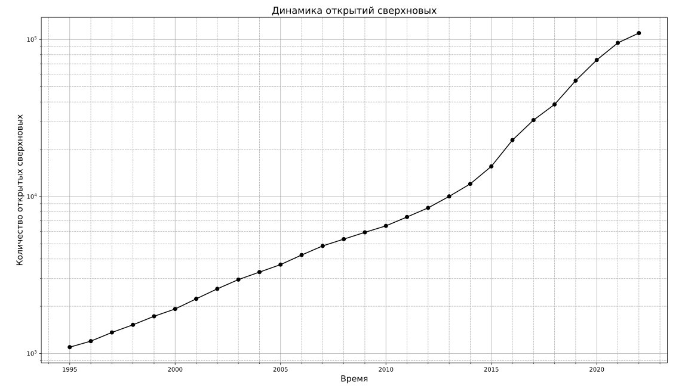

- До 1996 года открыто 1101 сверхновых, 350 – любителями, 56 ярче 13-й зв. величины (яркие сверхновые до 1996 года).
- За 1996 год открыто 101 сверхновых, 29 – любителями, 0 ярче 13-й зв. величины. Всего к концу года открыто 1202, 379 – любителями.
- За 1997 год открыто 163 сверхновых, 23 – любителями, 0 ярче 13-й зв. величины. Всего к концу года открыто 1365, 402 – любителями.
- За 1998 год открыто 162 сверхновых, 20 – любителями, 3 ярче 13-й зв. величины. Всего к концу года открыто 1527, 422 – любителями.
- За 1999 год открыто 202 сверхновых, 64 – любителями, 0 ярче 13-й зв. величины. Всего к концу года открыто 1729, 486 – любителями.
- За 2000 год открыто 196 сверхновых, 73 – любителями, 0 ярче 13-й зв. величины. Всего к концу года открыто 1925, 559 – любителями.
- За 2001 год открыто 308 сверхновых, 93 – любителями, 2 ярче 13-й зв. величины. Всего к концу года открыто 2233, 652 – любителями.
- За 2002 год открыто 352 сверхновых, 105 – любителями, 1 ярче 13-й зв. величины. Всего к концу года открыто 2585, 757 – любителями.
- За 2003 год открыто 375 сверхновых, 129 – любителями, 1 ярче 13-й зв. величины. Всего к концу года открыто 2960, 886 – любителями.
- За 2004 год открыто 343 сверхновых, 138 – любителями, 2 ярче 13-й зв. величины. Всего к концу года открыто 3303, 1024 – любителями.
- За 2005 год открыто 384 сверхновых, 133 – любителями, 2 ярче 13-й зв. величины. Всего к концу года открыто 3687, 1157 – любителями.
- За 2006 год открыто 557 сверхновых, 134 – любителями, 3 ярче 13-й зв. величины. Всего к концу года открыто 4244, 1291 – любителями.
- За 2007 год открыто 605 сверхновых, 113 – любителями, 3 ярче 13-й зв. величины. Всего к концу года открыто 4849, 1404 – любителями.
- За 2008 год открыто 507 сверхновых, 138 – любителями, 3 ярче 13-й зв. величины. Всего к концу года открыто 5356, 1542 – любителями.
- За 2009 год открыто 559 сверхновых, 146 – любителями, 0 ярче 13-й зв. величины. Всего к концу года открыто 5915, 1688 – любителями.
- За 2010 год открыто 589 сверхновых, 153 – любителями, 2 ярче 13-й зв. величины. Всего к концу года открыто 6504, 1841 – любителями.
- За 2011 год открыто 906 сверхновых, 168 – любителями, 7 ярче 13-й зв. величины. Всего к концу года открыто 7410, 2009 – любителями.
- За 2012 год открыто 1058 сверхновых, 172 – любителями, 4 ярче 13-й зв. величины. Всего к концу года открыто 8468, 2181 – любителями.
- За 2013 год открыто 1552 сверхновых, 213 – любителями, 6 ярче 13-й зв. величины. Всего к концу года открыто 10020, 2394 – любителями.
- За 2014 год открыто 2018 сверхновых, 201 – любителями, 2 ярче 13-й зв. величины. Всего к концу года открыто 12038, 2595 – любителями.
- За 2015 год открыто 3520 сверхновых, 234 – любителями, 2 ярче 13-й зв. величины. Всего к концу года открыто 15558, 2829 – любителями.
- За 2016 год открыто 7305 сверхновых, 273 – любителями, 0 ярче 13-й зв. величины. Всего к концу года открыто 22863, 3102 – любителями.
- За 2017 год открыто 7804 сверхновых, 254 – любителями, 3 ярче 13-й зв. величины. Всего к концу года открыто 30667, 3356 – любителями.
- За 2018 год открыто 7953 сверхновых, 207 – любителями, 3 ярче 13-й зв. величины. Всего к концу года открыто 38620, 3563 – любителями.
- За 2019 год открыто 16148 сверхновых, 167 – любителями, 1 ярче 13-й зв. величины. Всего к концу года открыто 54768, 3730 – любителями.
- За 2020 год открыто 19362 сверхновых, 131 – любителями, 5 ярче 13-й зв. величины. Всего к концу года открыто 74130, 3861 – любителями.
- За 2021 год открыто 21101 сверхновых, 120 – любителями, 9 ярче 13-й зв. величины. Всего к концу года открыто 95231, 3981 – любителями.
- За 2022 год открыто 17041 сверхновых, 127 – любителями, 12 ярче 13-й зв. величины. Всего к концу года открыто 112272, 4108 – любителями.
- Всего открыто 112008 сверхновых, 3013 – любителями, 132 ярче 13-й зв. величины.


статистика:
- Всего транзиентов с 01.01.2016: 109960, 107347 в открытом доступе
- Сверхновых классифицировано: 11317
- Всего спектров: 13805
Ссылки
- Статистика новых звезд
- List of supernova impostors – LBV's (Luminous Blue Variables).
- List of supernovae wiki page.
- A History of Supernova Discovery: анимация.
- SN 1885A (S And) в M31, открыта 17.08.1885, блеск в пике 5.85 (21.08.1985).
- SN 1972E в NGC 5253, открыта (06)13.05.1972, блеск в пике ~8.5.
- SN 1987A в Большом Магеллановом Облаке, открыта в ночь 23–24.02.1987, блеск в пике 2.9 (10.05.1987).
Страница на rochesterastronomy.org/snimages/
- SN 2011fe, в M101, открыта 24.08.2011 по снимкам 22 и 23 августа 2011. Блеск в пике 9.9 (13.09.2011).
- The Open Supernova Catalog.
The catalog includes metadata for 58,901 supernovae with 595,032 individual photometric detections and 22,472 individual spectra.
372 SNe in Milky Way, 322 SNe in M83, 214 SNe in M33, 162 SNe in M31, 154 SNe in NGC 2403, 103 SNe in NGC 4214, 81 SNe in NGC 4449, 78 SNe in NGC 4564.
SIMBAD Astronomical Database of objects beyond the Solar System – CDS (Strasbourg).
Последнее обновление 2022.11.17 содержит:
- 13678534 объектов
- 54410880 идентификаторов
- 411448 библиографических ссылок
- 30949230 цитирований объектов в статьях